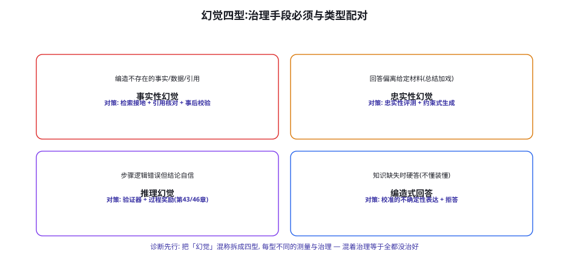
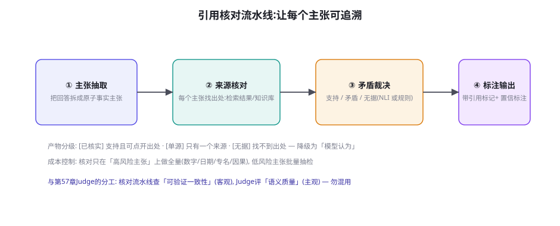

幻觉治理与事实性工程
幻觉是 LLM 的原生属性而非待修的 bug——本章的立场不是「消灭幻觉」而是「工程化管理它」：把混称「幻觉」拆成四型分别测量与治理、用检索接地与引用核对建立「可追溯的事实链」、教会模型校准地表达不确定、以及用事后校验在架构层兜底。对 Agent 而言，幻觉治理的 stakes 更高：一句编造的事实会驱动一连串自主动作。
幻觉四型：治理必须与类型配对

四型的精确界定与测量方法：① 事实性幻觉（Factuality）——生成的世界事实与真实世界矛盾（编造的论文、错误的日期、不存在的功能）——测量：事实核查式评测（原子主张抽取 + 来源核对，本章 63.3）；② 忠实性幻觉（Faithfulness）——给定材料（检索结果、文档、对话历史）后，回答偏离材料内容（总结里加了材料没有的「细节」——这是 RAG 场景的头号幻觉）——测量：忠实性评测（RAGAS 类指标的 faithfulness 维度，第 15 章）；③ 推理幻觉（Reasoning）——推理步骤的逻辑错误但表述自信（算错但格式漂亮）——测量：验证器判分（第 43 章 RLVR 的评测面）、过程奖励的分步核查（第 46 章）；④ 编造式回答（Confabulation）——知识缺失时不表达不确定反而流畅硬答（「不懂装懂」——校准失败的典型形态）——测量：选择性预测评测（accuracy-coverage 曲线：模型在「自报有把握」的子集上的准确率——校准质量的直接读数）。「分型」的价值在治理的投资决策：客服场景的痛是②（偏离知识库）——治理投检索与约束；分析场景的痛是①④——治理投核查与校准；代码场景的痛是③——治理投验证器。不分型投治理 = 资源错配。
检索接地：让回答「站在材料上」
接地（Grounding）是治理①②的主战场，工程要点按「生成前后」分两段：生成前——材料质量与注入策略：检索的相关性阈值（低相关材料宁可不给——「垃圾进 → 忠实性幻觉出」：模型会「忠于」无关材料产出错误答案）、材料的「充分性检查」（覆盖用户问题需要的全部信息吗——不足时先追问或声明局限，第 53 章主动澄清的接地版）、以及多源交叉（关键事实要求 ≥2 个独立来源支持——单源材料的「忠实复述」仍是「事实性幻觉的搬运」）；生成中——约束式生成：系统提示的「忠实性契约」（「只使用材料中的信息，材料未覆盖的部分明确说『材料未提及』」——契约式提示对忠实性的提升有稳定实证）、以及格式约束（要求回答标注「依据第几段」——标注动作本身会降低幻觉率——生成时的自我审查效应）；生成后——忠实性校验（本页流水线的②③对「材料 vs 回答」跑一致性——RAG 管线的标准后置件）。接地的边界也要诚实：接地解决「与材料一致」，不解决「材料本身错误」——检索源的可靠性治理（第 47 章语料质量的检索面）是接地的上游工程，两层都做才有端到端的事实性。
「忠实性契约」的提示词写法值得给一个可抄的模板，因为它是接地工程里成本最低、见效最快的一件：
你是【公司名】的客服助手。回答的忠实性规则:
1. 你的全部事实性内容【只能】来自 <materials> 块中的材料。
2. 材料覆盖的部分: 直接引用材料内容回答, 并在句末标注
来源编号 (如 [M2])。
3. 材料未覆盖的部分: 明确使用固定句式
「这一点材料中没有提到, 建议您……」——禁止用通用知识补齐,
即使你「知道」答案 (你的通用知识可能过时或不适用本产品)。
4. 材料之间矛盾时: 指出矛盾并建议联系人工, 禁止自行裁决。
5. 数字、日期、政策条款: 必须与材料逐字一致, 禁止换算或概括。
6. 每次回答前自检: 我引用的每个事实, 能在材料中找到原句吗?
找不到的删掉或按第 3 条处理。模板的四个设计要点：① 「禁止用通用知识补齐」的显式声明——这是忠实性契约与普通提示的核心差异（模型默认会「帮忙」补齐——补齐的正是忠实性幻觉）；② 来源编号标注——标注动作的「自我审查效应」（生成时逐句对齐材料）有稳定的实证收益，同时为后置核对流水线提供了对齐锚点；③ 矛盾不自裁决——多源矛盾时模型「选一个」的动作是幻觉的高发形态，升级人工是唯一正确答案；④ 数字逐字一致——概括与换算是数字幻觉的两大来源（「约 30%」vs 材料里的「29.7%」——看似无害的润色在合规场景是事故）。模板按业务定制后 A/B 一轮（第 56 章快测门禁）即可上线——忠实性分数的提升通常立竿见影。
引用核对：可追溯的事实链

流水线四步的工程要点：① 主张抽取——把回答拆成原子事实主张（一个主张 = 一个可独立判真假的最小命题：「X 公司成立于 1998 年」「该药物适用于成人」）——抽取的质量决定整个流水线（拆太粗则核对粒度不够、太细则成本爆炸——按「数字/日期/专名/因果/否定」五类主张优先）；② 来源核对——为每个主张找出处：优先「本会话的检索材料」（忠实性核对），再「知识库」（事实性核对），最后「实时搜索」（高危主张的外部验证）；③ 矛盾裁决——主张与出处的三方判定（支持/矛盾/无据）——NLI 模型（自然语言推理）或强模型规则化判分——「矛盾」是最高优先级信号（主动纠错比降级标注更该触发）；④ 分级标注——产物三级：已核实（附可点开的出处）、单源（标注「单一来源」）、无据（降级为「模型认为/推测」的语言标记）。分级标注的产品价值在「诚实的置信表达」：用户看到「[已核实]」与「[模型认为]」的区分后，对前者的信任增强、对后者的使用更谨慎——整体决策质量上升——这与「全部输出一律装作确定」的默认形态形成产品级差异（第 64 章「诚实」作为对齐目标的落地）。
治理④（编造式回答）的核心是校准（Calibration）——模型的置信度与实际正确率的对应——与选择性预测（Selective Prediction）——「低置信时不回答」。技术路线三档：① 语言化置信——让模型用「确定/很可能/不确定」表达置信——便宜但校准性差（语言化的置信与实际正确率的相关性弱）；② 自一致性（Self-Consistency）校准——同一问题采样 N 次（温度 >0），答案的分布一致性作为置信代理（多数答案占比 100% → 高置信；5 个答案各不相同 → 低置信）——校准性好、成本 N 倍推理——适合离线核对与高风险问题的在线抽检；③ 校准训练——RLHF/RLAIF 的数据里加入「正确表达不知道」的偏好样本（第 41 章 DPO 数据的校准面）、或训练「正确性预测头」（预测自己的答案对不对——PRM 思想的置信版）——长期最有效，需要训练资源。选择性预测的产品化：低置信触发三种动作之一——拒答（「我不确定，建议查询 X」）、澄清（反问用户补充信息）、降级（给出答案但显式标注不确定性——配合引用核对的三级标注）。校准工程的验收指标：覆盖率-准确率曲线（risk-coverage curve）——「模型自信的 70% 答案里，准确率应该显著高于全量」——曲线越陡校准越好，这是比「幻觉率」更有信息量的一张图。
「选择性预测」的三动作（拒答/澄清/降级）在产品侧的路由逻辑值得给一个决策表，因为它衔接了校准工程与用户体验——「说不知道」之后做什么，决定了用户感知到的是「诚实」还是「没用」：
| 置信档 | 有无材料支持 | 路由动作 | 话术形态 | 反面教材 |
|---|---|---|---|---|
| 高置信 | 有已核实来源 | 正常回答 + 引用标注 | 直接回答，附出处 | 过度标注（处处「可能」） |
| 高置信 | 无外部来源 | 回答 + 「基于模型知识」标注 | 回答，标注知识截止 | 装作有出处 |
| 中置信 | 部分支持 | 降级回答：给确定部分 + 标不确定部分 | 「确定的是 X，不确定的是 Y」 | 确定部分与猜测混排 |
| 低置信 | 可澄清 | 反问澄清（第 53 章主动澄清） | 「您指的是 A 还是 B？」 | 拿低置信答案硬答 |
| 低置信 | 不可澄清 | 拒答 + 替代路径（第 62 章话术四件） | 「我不确定，建议查 X / 联系 Y」 | 空洞拒答（无替代） |
路由表的一个实施细节：置信档的边界不是固定的——按「下游动作的爆炸半径」（第 58 章）动态调整。同一置信分数，闲聊场景算「中置信」（降级回答即可），写进工单的场景就该按「低置信」处理（先澄清）——置信的路由阈值跟着用途走，不跟着分数走——这与第 60 章「权限随任务收缩」是同一原则在校准层的复刻。
事后校验：架构层的兜底
四型治理都做了，仍需要一个「架构层的最后闸门」——事后校验（Post-hoc Verification）。分场景的校验设计：数字与计算——「答案里的算术用代码重算」（第 51 章代码解释器的校验用法——LLM 算术不可信是确定性结论）；引用与出处——「引用的文献/链接真实存在吗」（DOI/URL 的批量核验——引用幻觉的最廉价检测）；时间敏感事实——「答案里的时效性主张标注知识截止吗」（模型不知道「现在几号」是架构事实——时效主张必须外置到工具，第 17 章）；与业务数据的一致性——「回答中提到的订单号/金额与数据库一致吗」（第 55 章锚点法的运行时版）。事后校验的部署形态：按风险分级——L2 以上动作的「依据主张」全量校验，普通回复抽样校验（5%~10%）——校验的成本用在「会被执行/会被传播」的内容上（写进数据库的主张、发给客户的话——校验优先级与「下游动作的爆炸半径」对齐，第 58 章威胁模型的因果链视角）。事后校验与第 22 章 reflection 的分工：reflection 是「模型自查」（便宜、事后、概率性），本章校验是「系统核查」（贵、必须、确定性）——高危链路上两者都要有。
| 场景 | 主导幻觉型 | 治理组合 | 验收指标 | 残留风险处置 |
|---|---|---|---|---|
| RAG 客服 | 忠实性② | 接地契约 + 忠实性校验 | faithfulness 分数、脱库率 | 低置信转人工 |
| 研究助理 | 事实性①+编造④ | 引用核对 + 外部验证 | 主张核实率、引用真实率 | 「无据」降级标注 |
| 数据分析 | 推理③+事实① | 代码重算 + 数字校验 | 计算正确率、口径一致率 | 关键数字强制重算 |
| 对话闲聊 | 编造④ | 校准表达 + 拒答 | 覆盖率-准确率曲线 | 「模型认为」常态化 |
| Agent 自主执行 | 全型（后果放大） | 全链路 + 事后校验闸门 | 执行前主张核实率 | 低置信冻结动作 |
测量你系统的「覆盖率-准确率曲线」（校准质量的一张图）：挑 50 个「答案可判真假」的问题（分难中易三档），让模型自报置信（高/中/低三档），然后实测各档的正确率。理想曲线：高置信档正确率 >90%、中档 ~75%、低档 ~60% 且三档显著拉开。常见实测结果：各档正确率几乎一样（~70%）——「自报置信与正确率无关」是未做校准工程的系统的默认状态。然后做一个快速干预：加「自一致性校准」（每题 5 次采样，按多数答案占比重标置信档）再测一次曲线——多数情况下曲线陡峭度立升。这个两小时的实验让你亲手验证「校准是可以工程化的」，产出的曲线就是第 57 章误差预算思维的直接应用。
「Agent 执行前的主张核实」还有一条特化的工程通道值得单独说明：「计划级校验」。第 58 章的预演模式（dry-run）产出的执行计划里，每一步「依据」其实是一组主张（「订单 X 状态为可退款」→ 动作：执行退款）——计划级校验把这些依据主张先过一遍核对流水线（数据库断言 / 规则校验 / 引用核对），全部核实才放行预演、预演通过才进闸门。它与「回复级校验」的差异在校验时机：回复级校验发生在「说出去之前」，计划级校验发生在「做出去之前」——后者的失败成本高一个量级（动作不可逆），因此校验强度也高一档（依据主张 100% 核实，无据主张直接冻结动作而不是降级标注）。计划级校验与第 46 章「奖励的里程碑制」还有个妙处：训练时的里程碑校验器与生产时的计划校验器可以是同一套断言代码（第 60 章「校验优先于执行」的骨架复用）——训练学会的行为与生产的校验规则同构，是「训练-部署一致性」（第 39 章）在安全层的实现。
四型治理的「组织分工」也值得排一排，因为幻觉治理横跨了三种角色：① 数据/知识团队——管接地的上游（材料质量、知识库治理、多源交叉的来源管理）——幻觉的「供给侧」治理；② 工程/算法团队——管接地与校验的管线（契约提示、核对流水线、校验闸门、校准工程）——幻觉的「管道侧」治理；③ 产品/运营团队——管置信的表达（路由话术、降级标注、用户教育、投诉归因）——幻觉的「感知侧」治理。三方的协作界面是「幻觉 SLO」（本页 Q2 的三层承诺）与「投诉归因流程」（每条用户报的幻觉，先归型（四型），再归责（哪一侧的防线缺口），再修复）。组织上的常见病是「幻觉治理 = 算法团队的事」——感知侧没人管（话术空洞）、供给侧没人管（知识库三年没更新），算法团队的管线再好也堵不住两头的漏——幻觉是系统属性，不是模型属性——治理它的组织也要是「系统性」的。
一个跨章的实测经验补充：「忠实性校验」与「引用核对」的误报治理。核对流水线（图 63-2）上线初期的典型误报有三类：① 同义改写判「矛盾」（材料说「占三成」，回答写「约 30%」——NLI 模型偶发误判为矛盾）——解法是核对前做「数值与实体的规范化归一」（百分数、单位、日期的标准化后再判）；② 跨句推理判「无据」（材料两句合起来支持的主张，单句核对找不到出处）——解法是「无据」二次复核：把主张与材料的相邻段落拼接后再判一次（局部上下文恢复）；③ 指代依赖判「无据」（主张里的「该公司」依赖前文定义）——解法是主张抽取时做指代消解（把「该公司」还原成实体名再核对）。三类误报的共同教训：核对流水线的「判分质量」本身就是一条质检对象——第 57 章「判分器要过等价性测试」的核对版——上线首月把人工抽检比例开到 20%，校准到误报率 <5% 后再降回常规抽检。
收尾前回应一个高频的运营疑问：「幻觉投诉来了，客服/运营该怎么第一响应？」——给一个三步应答模板：① 致谢与记录（「感谢指正，已记录核实」——用户报幻觉是免费的分布式质检，态度决定后续是否还报）；② 快速归型（按四型分类 + 判断影响面：单条错误还是模式性错误——模式性的立即升级）；③ 分层回复（已修复则告知修复；未修复则如实说明「该内容正在核实中，在此之前请勿作为依据」——「正在核实」的诚实话术好过沉默或狡辩）。三步的总耗时应在 15 分钟内——幻觉投诉的响应速度本身就是产品信任的组成部分（第 65 章事故响应的用户面）。运营侧的长期习惯：每月把幻觉投诉聚成一张「错误模式榜」，与工程侧的「防线缺口清单」（第 58 章地图）对齐复盘——用户报的每一个幻觉，都是威胁地图上一颗该点亮而未点亮的灯。
三个高频疑问
Q：检索增强（RAG）之后幻觉少了很多，还需要本章的这些吗？需要，RAG 改变的是幻觉的「构成」而不是「消失」——实测中 RAG 系统的幻觉构成会从「① 事实性幻觉为主」迁移为「② 忠实性幻觉为主」（答非材料的、对无关材料的「忠实复述」、多源材料的错误缝合）。三个理由支持完整治理栈：① RAG 的忠实性幻觉更隐蔽（回答「看起来有据可依」——引用核对流水线正是为此设计）；② 检索质量是分布性的（低相关材料混入的边缘场景——接地阈值管不住全部）；③ 时效与长尾（知识库里没有的——编造式回答④在 RAG 边缘回升）。RAG 与治理栈的正确关系：RAG 是「给幻觉治理提供材料基础」，治理栈是「保证材料被诚实使用」——两者是流水线的上下游，不是替代关系。
Q：产品经理要求「幻觉率 <1%」——这个要求怎么回应？先把要求翻译成可工程的语言，三步对话：① 拆场景——「哪个场景的什么类型主张？」（闲聊场景的幻规件数与医疗建议的件数不可同权——第 58 章爆炸半径的口径）；② 定义测量——「幻觉」的判定标准（第 50 章口径纪律：主张抽取的粒度、判定的裁判是谁、抽样还是全量——不同口径下数字差 5 倍很正常）；③ 分层承诺——「高危主张（会驱动动作/会被引用的）核实率 100% 可承诺（校验闸门保证）；全量幻觉率 <1% 需要明确测量口径与成本——大概率不现实也不必要」。翻译后的产物是「分层的幻觉 SLO」：「被执行的内容 0 幻觉（校验保证）+ 展示内容高危主张 95% 核实 + 全量幻觉率持续下降（趋势承诺）」——比一个无法兑现的「<1%」更专业也更诚实。把「幻觉率」当单一 KPI 是治理的常见误区——它是一个需要分型、分层、分口径的指标族。
Q：模型本体（厂商侧）的幻觉治理进展对我们有用吗？有用但作用面有限，分两层看：有用的部分——厂商的 RLHF/RLVR 对齐、检索增强的训练（让模型「更愿意引用」）、推理模型的自我验证（第 43 章）——都在降低「基座的幻觉率」，这些红利你免费获得（换模型版本即生效——第 62 章版本管理的另一个理由）。作用面有限的部分——基座治理管「模型的世界知识幻觉」，管不了「你的领域材料的使用」（忠实性②是你的 RAG 工程问题）、管不了「校准表达的产品化」（③的选择性预测是你的架构问题）、更管不了「幻觉被 Agent 执行」（动作链的校验闸门是你的系统问题）。结论：基座治理是「随版本升级的免费地板」，你的治理栈决定的是「天花板」——地板会抬高，天花板不会自己长高——本章的工程在可预见的代际里都不会过时。
本章在全书网络中的连接：上游是第 13-15 章（RAG——接地的材料面）、第 43/46 章（RLVR 与过程奖励——推理幻觉的训练面治理）、第 57 章（Judge——核对流水线的语义层分工）；横向与第 60 章（动作分级——幻觉治理阈值与爆炸半径对齐）、第 58 章（威胁矩阵「错误信息」列的展开）并列；下游通向第 64 章（对齐——「诚实表达不确定」是对齐目标的产品面）、第 74 章（Deep Research——引用核对流水线的旗舰应用场景）、第 65 章（治理——幻觉事故的责任面）。复习锚点：四型图（63-1）、接地三段、核对流水线图（63-2）、校准三档与 r-c 曲线、五场景配方表（63-1 表）、幻觉 SLO 三层。
最后把「幻觉治理」放到安全篇的坐标系里收束。本章与前几章的关系值得点透：注入（59）是「外部恶意导致的行为失控」，越狱（62）是「用户恶意导致的内容失控」，而幻觉是「无恶意的系统性不可靠」——它的防御哲学因此与前两者不同：注入与越狱可以「拒之门外」（过滤、鉴权），幻觉只能「管理误差」（校验、校准、透明化）——就像工程里「随机误差靠冗余与校准、系统误差靠设计修正」的分工。安全篇读到这里，三条威胁轴（恶意外部输入、恶意用户、非恶意不可靠）都有了各自的工程学——它们共享的元原则是本章开头那句话的推广：不是「消灭缺陷」，而是「工程化管理缺陷」——让每个缺陷在到达用户/世界之前，都要经过一道显式的、可审计的处理。下一章（对齐与价值观）把视角从「不可靠」转向「不可取」——模型的能力对了但价值排序不对怎么办——安全篇的最后一个内功章。
本章小结
- 幻觉四型（事实性/忠实性/推理/编造式）各有测量与治理——分型是治理投资决策的前提。
- 接地三段：生成前（质量与充分性检查）、生成中（忠实性契约 + 依据标注）、生成后（一致性校验）。
- 引用核对流水线：主张抽取 → 来源核对 → 矛盾裁决 → 三级标注（已核实/单源/无据）——透明度代替虚假确定性。
- 校准三档：语言化（弱）、自一致性（好而贵）、校准训练（长期）——选择性预测把「低置信」转化为拒答/澄清/降级三动作。
- 事后校验是架构闸门：数字重算、引用核验、时效外置、与业务数据一致性——校验优先级对齐爆炸半径。
- 幻觉 SLO 分三层：执行内容 0 幻觉（闸门）、高危主张 95% 核实、全量趋势下降——拒绝单口径 KPI。
自测题
- 收集你系统最近的 20 条「幻觉投诉」，按四型分类——占比最高的那型，治理投资到位了吗？
- 跑本页校准实验：你的覆盖率-准确率曲线画出来什么样？自一致性干预后的陡峭度变化是多少？
- 为你的产品写「幻觉 SLO」：三层承诺各是什么、测量口径是什么、谁来验收？
- 「Agent 执行前主张核实率 100%」的工程实现清单：哪五类主张要核、用什么核、不过闸怎么办？
参考文献与延伸阅读
- Ji, Z. et al. (2023). Survey of Hallucination in Natural Language Generation. ACM Computing Surveys（幻觉分类学的奠基综述）
- Huang, L. et al. (2023). A Survey on Hallucination in Large Language Models. arXiv:2311.05232
- Es, S. et al. (2023). RAGAS: Automated Evaluation of Retrieval Augmented Generation. arXiv:2309.15217（faithfulness 指标的标准化）
- Geva, M. et al. (2021). WikiASP / 语言模型的自洽性校准系列. arXiv:2203.11171（Self-Consistency, Wang et al. 2022）
- OpenAI (2024). Why language models hallucinate. openai.com/research（训练目标与幻觉的成因分析）
- Guo, C. et al. (2017). On Calibration of Modern Neural Networks. arXiv:1706.04599（校准的经典方法论）